논문 한눈에 보기
TriSense (NeurIPS 2025)는 비디오 시간 이해의 핵심 공백을 파고든다. 기존 모델들은 시각만 보거나, 세 모달리티를 무조건 합산하거나, 일부 모달리티가 빠지면 무너졌다. TriSense는 쿼리가 무엇을 묻느냐에 따라 시각·오디오·음성의 기여도를 동적으로 조절하는 Query-Based Connector를 핵심으로 삼는다. 함께 공개된 TriSense-2M 데이터셋은 200만 샘플, 평균 905초 롱 비디오로 이 분야 최대 규모다.
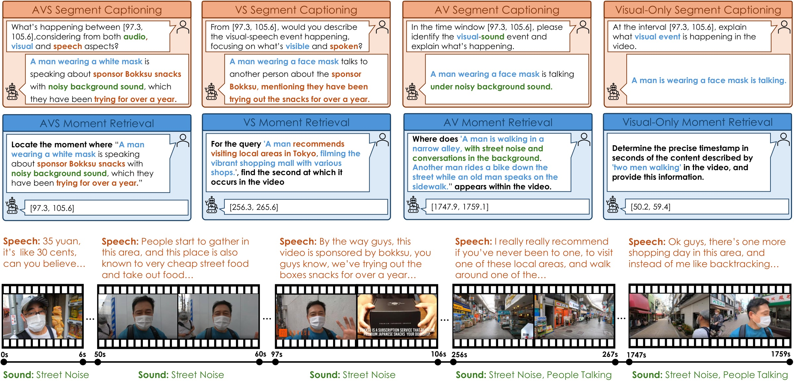
Abstract
흐름: 인간의 멀티모달 이해 능력 → 기존 모델의 오디오 통합 실패 → TriSense 제안(Query-Based Connector) → TriSense-2M 소개 → 실험 결과 예고
문제: 오디오를 제대로 못 쓰는 기존 모델
"A scientist passionately speaks on wildlife conservation as dramatic orchestral music plays, with the audience nodding and applauding" — 이 장면을 찾으려면 시각·오디오·음성을 동시에 처리해야 한다. 기존 모델은 이를 못 한다.
"Existing models often struggle to effectively fuse and interpret audio information, limiting their capacity for comprehensive video temporal understanding."
TriSense + TriSense-2M
Query-Based Connector로 모달리티 기여도를 쿼리에 맞게 조절. 200만 샘플의 고품질 데이터셋 TriSense-2M으로 학습.
"Central to TriSense is a Query-Based Connector that adaptively reweights modality contributions based on the input query, enabling robust performance under modality dropout and allowing flexible combinations of available inputs."
Introduction
흐름: 인간 지각의 멀티모달 통합 → 기존 MLLM의 두 가지 핵심 한계 → TriSense의 세 가지 기여
기존 MLLM의 두 가지 핵심 한계
① 데이터 부족: 세 모달리티를 동시에 annotate한 롱 비디오 데이터가 없다. ② 모달리티 적응 부재: 쿼리에 따라 어떤 모달리티가 중요한지 판단하는 메커니즘이 없다.
LongVALE는 모든 모달리티 토큰을 하나로 압축해 세부 정보를 잃고, 모달리티 dropout에 취약하다. Qwen2.5-Omni는 TMRoPE로 시간 정렬을 시도하지만 긴 영상의 fine-grained temporal grounding에서 여전히 부족하다.
"Current MLLMs are generally not equipped to assess the relative importance of each modality based on task or query context."
세 가지 기여
① TriSense-2M: 200만 샘플, 평균 905초 롱 비디오, 모달리티 조합 다양성 지원. ② TriSense: Query-Based Connector로 동적 모달리티 융합. ③ Segment Captioning + Moment Retrieval 8가지 모달리티 조합에서 SOTA.
Related Work
흐름: 비디오 시간 이해 MLLM 리뷰 → 시간 이해 벤치마크 리뷰 → 공통 한계 정리
비디오 시간 이해 MLLM
TimeChat, VTimeLLM, Momentor, VTG-LLM, TRACE 등이 시간 추론을 개선했으나 모두 시각 전용. LongVALE, Qwen2.5-Omni가 멀티모달을 시도하지만 적응성이 부족하다.
"Despite these advancements, many existing models are either limited to visual modalities or lack support for flexible combinations of different modalities."
벤치마크의 한계
VAST-27M, VALOR, LongVALE는 모달리티를 단순 연결(concatenation)만 하고, 모달리티가 빠졌을 때의 robustness를 고려하지 않는다.
"In real-world videos, audio, visual, and speech inputs are not always available simultaneously, raising important questions about model robustness in the face of missing modalities."
Data Construction — TriSense-2M
흐름: 왜 새 데이터셋이 필요한가 → 파이프라인 구조(Generator + Judger) → 최종 데이터셋 통계
왜 새 데이터셋인가
기존 데이터셋은 모든 모달리티가 항상 동시에 존재한다고 가정한다. 실제 비디오에서는 오디오가 없거나 음성이 없는 경우가 흔하다. 이 가정이 모달리티 dropout 상황에서의 실패를 낳는다.
"This assumption limits the development of models that can handle missing or partial inputs effectively."
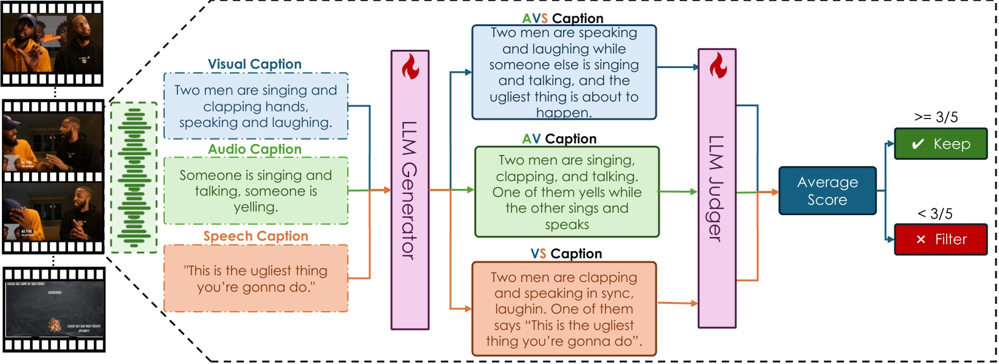
Generator + Judger 파이프라인
Qwen2.5-72B 기반 Generator가 시각·오디오·음성 캡션을 AVS/AV/VS 세 조합으로 융합. Judger가 0~5점으로 평가해 3점 미만 제거. GPT-o1으로 학습 데이터를 먼저 만들고 수동 검수.
Generator 학습 데이터 10,000개, Judger 학습 데이터 3,000개를 GPT-o1으로 생성 후 수동 필터링. InternVid와 VAST에서 원본 영상을 가져오고, 모달리티별 캡션은 기존 파이프라인으로 생성한다.
최종 데이터셋 통계
5백만 초기 샘플 → 200만 고품질 샘플. 약 38,000개 롱 비디오, 평균 905초 — 기존 최대인 LongVALE(235초)의 약 4배.
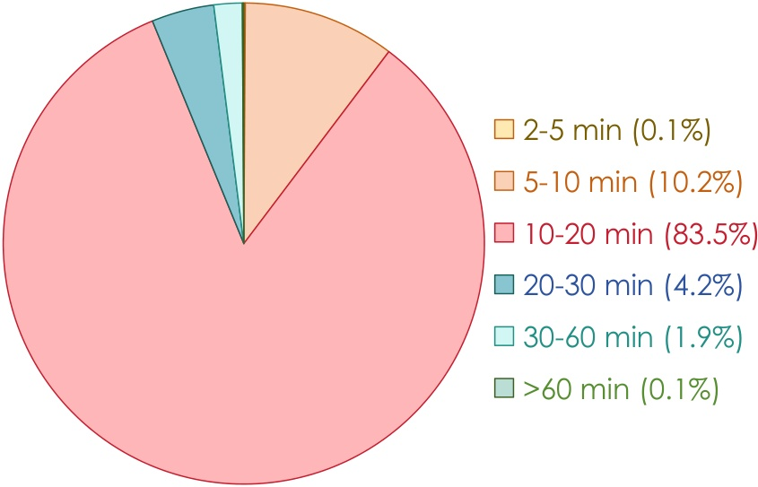
TriSense Architecture
흐름: 전체 아키텍처 개요 → 멀티모달 정보 추출 → Query-Based Connector → Causal Event Prediction
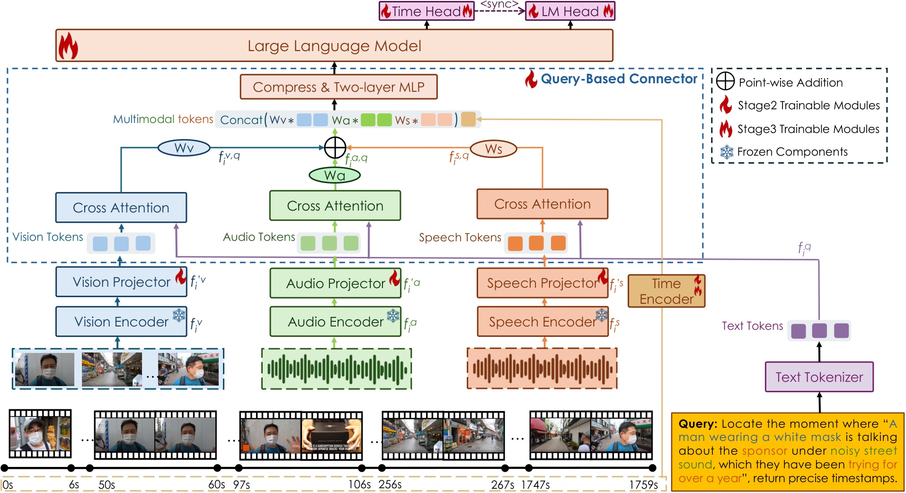
멀티모달 정보 추출
64프레임 균일 샘플링. 각 프레임마다 ±1초 오디오 세그먼트 추출. CLIP·BEATs·Whisper로 모달리티별 토큰 생성. Slot-Based Compression으로 각 16토큰으로 압축. Time Encoder로 타임스탬프를 6자리 문자 시퀀스로 인코딩.
타임스탬프 예시: [123.4] → ⟨0⟩⟨1⟩⟨2⟩⟨3⟩⟨.⟩⟨4⟩. 세 모달리티 × 16토큰 + 시간 임베딩이 LLM에 입력된다.
Query-Based Connector
압축된 모달리티 피처가 Cross-Attention으로 쿼리와 상호작용 → Global Average Pooling으로 각 모달리티의 전역 표현 추출 → 단층 MLP + Softmax로 가중치(wv, wa, ws) 계산 → 가중 합산 + 재압축 → 2층 MLP로 LLM 입력 차원 정렬.
$$w_m = \frac{\exp(\tilde{w}m)}{\sum{m'\in{v,a,s}} \exp(\tilde{w}_{m'})}$$
이 메커니즘 덕분에 특정 모달리티가 없으면(dropout) 해당 가중치가 자동으로 낮아지고 나머지가 보상한다.
Causal Event Prediction
영상을 이벤트 시퀀스 {e1, e2, ..., eK}로 분해. 이전 이벤트들과 쿼리를 조건으로 다음 이벤트(타임스탬프 + 캡션)를 예측하는 인과 모델링 방식.
⟨sync⟩ 특수 토큰이 Time Head(타임스탬프 예측)와 LM Head(텍스트 생성) 사이의 전환 신호 역할을 한다.
"When the ⟨sync⟩ token is encountered, the LLM transitions between decoding modalities to generate either timestamp-aligned predictions or free-form textual outputs, depending on the task."
Experiments
흐름: 평가 태스크·메트릭·베이스라인 → TriSense-2M 결과 → LongVALE 제로샷 → 공개 벤치마크(Charades-STA, ActivityNet) → Ablation
평가 세팅
두 태스크: Segment Captioning(BLEU-4, CIDEr, ROUGE_L, METEOR)과 Moment Retrieval(R@IoU=0.5, R@IoU=0.7, mIoU). 8가지 모달리티 조합: AVS·VS·AV·V 각각에 SC/MR 적용.
베이스라인: VTimeLLM, TimeChat, VTG-LLM, TRACE(시각 전용 VTG), LongVALE, Qwen2.5-Omni(옴니모달).
TriSense-2M 메인 결과
AVS 세팅에서 기존 최강 LongVALE와 Qwen2.5-Omni를 크게 앞선다. 단, Visual-Only MR에서는 TRACE(128프레임) 대비 소폭 낮은데, TriSense가 64프레임만 사용하고 멀티모달 최적화 모델이기 때문이다.
"TriSense consistently outperforms existing video LLMs across nearly all evaluated tasks. It also significantly surpasses latest omni-modal models like LongVALE and Qwen2.5-Omni, particularly in the audio-visual-speech (AVS) setting."
LongVALE 제로샷
LongVALE 학습 데이터 없이 제로샷으로 평가. MR에서 LongVALE(자체 데이터 학습)와 비슷한 성능. SC는 캡션 스타일 차이로 격차가 있다.
"Our zero-shot performance on the Moment Retrieval task is comparable to LongVALE's performance, even though their model is trained on the same dataset."
공개 벤치마크 제로샷 (Charades-STA, ActivityNet)
시각 전용 벤치마크에서도 경쟁력 있는 성능. 특히 IoU=0.7 고정밀도 기준에서 더 적은 프레임(64)으로 타 모델 대비 우위.
"TriSense shows slightly inferior performance in Table 3, it still achieves competitive performance in visual-only settings, showing especially higher accuracy (IoU=0.7) than others, even with less frames used."
Ablation Studies
① 학습 단계: Stage 1만으로는 ~50% 성능. Stage 2 추가 후 급격히 향상. ② Connector: Addition(단순 합산) < Fixed Weights < 동적 가중치 순. ③ 프레임 수: 64→128 증가 시 MR에서 더 큰 향상.
Visual-Only 세팅에서는 고정 가중치(시각=1)가 동적 가중치보다 소폭 높다 — 멀티모달 최적화와 단일 모달리티 특화 간 트레이드오프.
Conclusion
TriSense는 Query-Based Connector로 임의 모달리티 조합에서 강건한 시간 이해를 달성한다. TriSense-2M은 이 분야 가장 큰 규모의 멀티모달 롱 비디오 데이터셋이다.
"Our modality-adaptive framework marks a substantial step toward more flexible and human-like video understanding systems."
Appendix A — 학습 레시피 (3단계)
흐름: Stage 1 Feature Alignment → Stage 2 Connector Generalization → Stage 3 Instruction Tuning
Stage 1: Feature Alignment
Query-Based Connector와 LM Head만 학습. 단일 모달리티 입력으로 각 모달리티별 특징을 개별적으로 학습. 학습 데이터: Clotho(오디오), LLaVA-LCS558K(시각), Valentini 음성 데이터셋.
4×A100-80GB GPU, 배치 512, 단일 프레임 입력, 약 10시간 소요.
Stage 2: Connector Generalization
혼합 모달리티 데이터 투입. Connector·Time Encoder·Time Head·LM Head 학습(LLM 백본 고정). 약 880K 샘플. 16×A100-80GB GPU, 약 3.5일.
Stage 3: Instruction Tuning
Connector를 고정하고 Time Encoder·Time Head·LM Head·LLM 백본을 학습. 약 1.12M 샘플 + LLaVA-Video-178K 일부 혼합(일반 이해 능력 유지). 16×A100-80GB GPU, 약 7일.
LLM 백본: Mistral-7B(TRACE 초기화). 시각 인코더: CLIP-ViT-L/14-336. 오디오: BEATs_iter3+. 음성: Whisper-large-V3. 최대 컨텍스트 4096토큰. 학습 시 1fps 리샘플링(추론 시 제외).
Appendix B — TriSense-2M 상세
흐름: Generator·Judger 학습 과정 → 데이터 포맷
Generator·Judger 학습
GPT-o1으로 고품질 reference 데이터 생성 → 수동 필터링 → SFT. 배치 1,000개 단위로 생성 후 500개 무작위 샘플 수동 검수. 80% 이상이 기준 충족 시 배치 유지, 아니면 폐기.
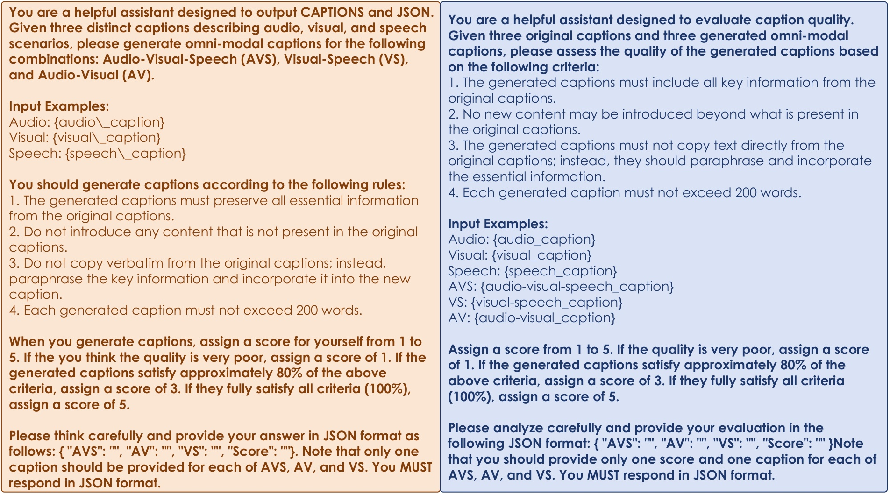
데이터 포맷
ShareGPT 스타일, 8라운드 대화. 각 라운드는 서로 다른 모달리티 조합의 태스크(예: VS-SC → AVS-MR)로 랜덤 구성. ⟨sync⟩·⟨time⟩ 특수 토큰으로 예측 헤드 전환 신호.
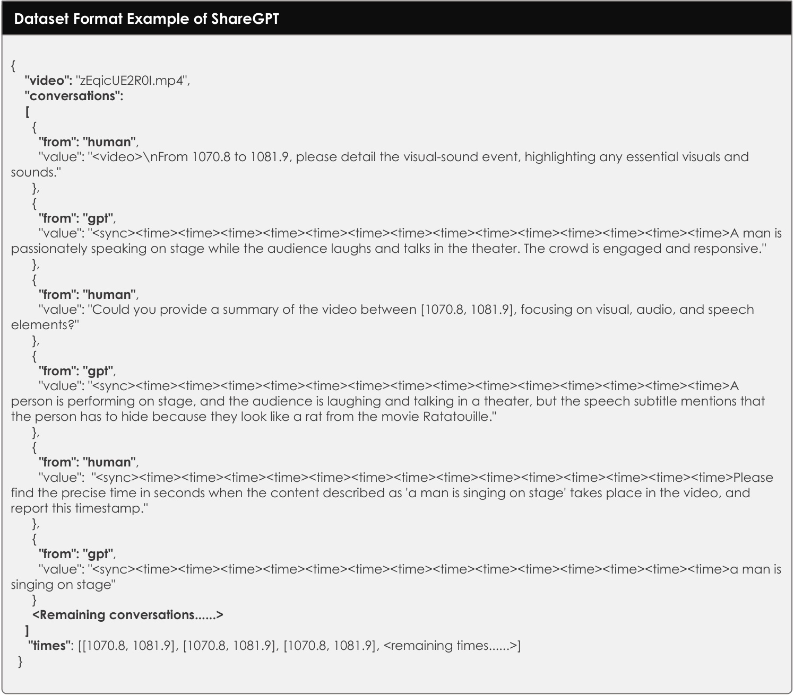
Appendix C — 추가 실험
흐름: Slot 압축 비율 어블레이션 → Task-specific Head 어블레이션 → Query-Based Connector 브랜치 어블레이션 → VideoMME 일반 이해
Slot 압축 어블레이션
Slot 수를 8→64로 늘릴수록 성능이 소폭 향상되지만 계산 비용이 급증. Slot=16이 성능-비용 최적 균형.
Task-specific Head 어블레이션
통합 헤드(LM Head만) 대비 Time Head + LM Head 조합이 MR에서 크게 앞선다. Time Head가 타임스탬프 정보를 추가로 제공하는 역할이 핵심.
Query-Based Connector 브랜치 어블레이션
세 모달리티가 모두 있는 AVS-Full이 모든 태스크에서 최고. V-Only 브랜치만 써도 V-MR에서는 경쟁력 있으나 AVS 태스크에선 큰 폭으로 뒤처짐.
VideoMME 일반 이해
일반 비디오 이해 벤치마크에서도 경쟁력 있는 성능. TRACE-uni(0.9M 일반 데이터)보다 훨씬 적은 500K 일반 데이터만 사용.
Appendix D — 케이스 스터디
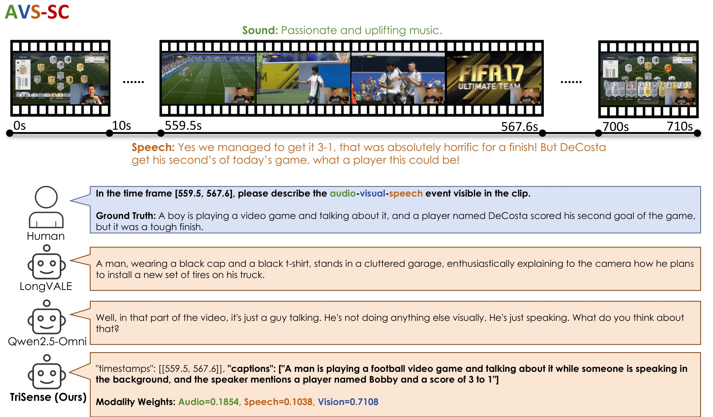
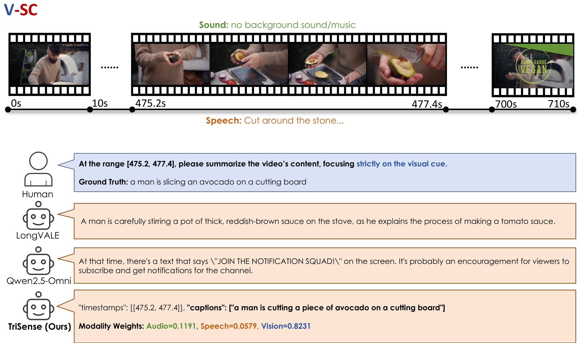
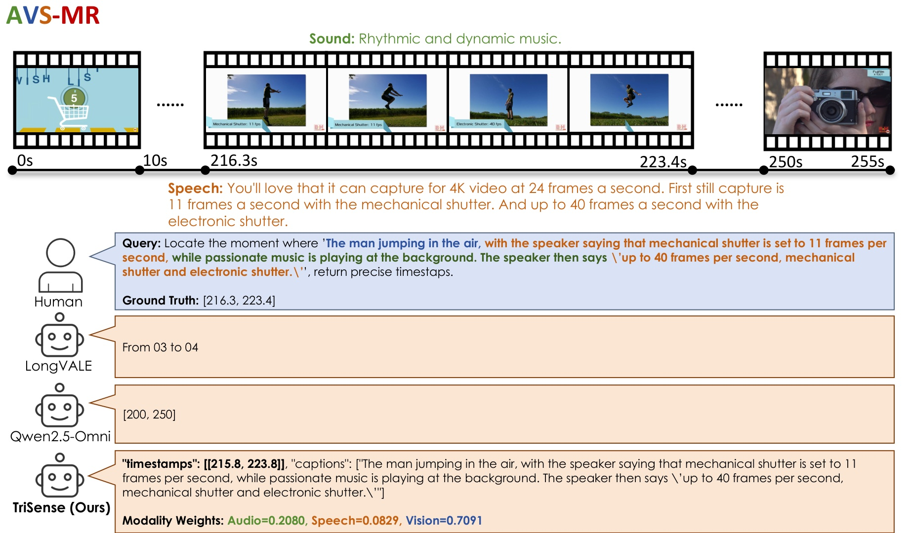
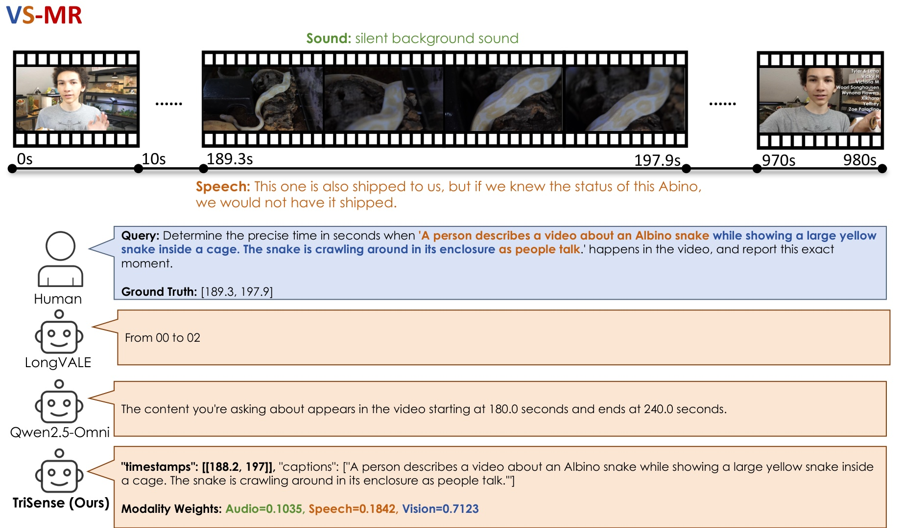
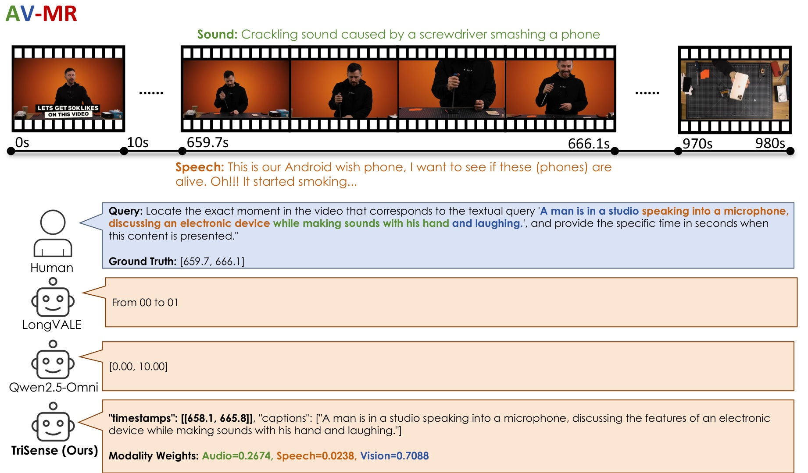
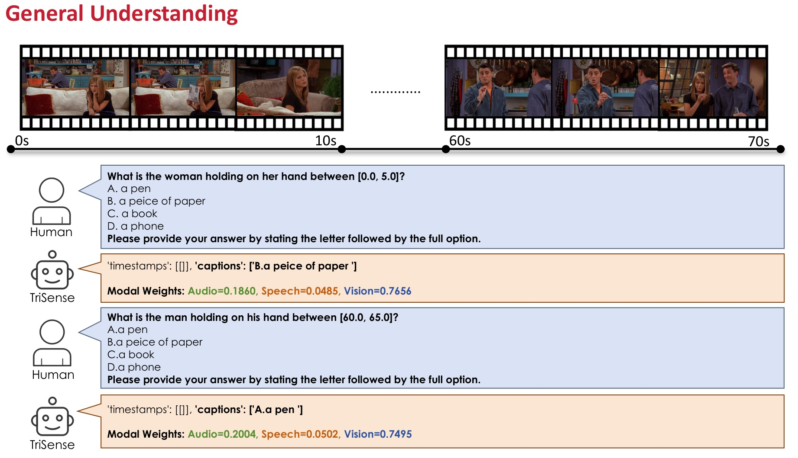